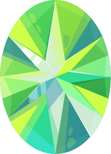

낙천적인 토파즈
낙천적인 토파즈유연석
{% elif food == 'ENFJ' %} 배려감 넘치는 크리스탈
배려감 넘치는 크리스탈지민
{% elif food == 'ENTJ' %} 사랑을 쟁취하는 에메랄드곽동연
{% elif food == 'ENTP' %} 생각이 톡톡 튀는 페리도트
생각이 톡톡 튀는 페리도트
정혁
{% elif food == 'ESFJ' %} 포용하는 사파이어
포용하는 사파이어박보검
{% elif food == 'ESFP' %} 기쁨을 주는 쿤자이트
기쁨을 주는 쿤자이트
정재현
{% elif food == 'ESTJ' %} 책임감의 대명사 터키석
책임감의 대명사 터키석김민규
{% elif food == 'ESTP' %} 자신감 넘치는 루벨라이트
자신감 넘치는 루벨라이트태현
{% elif food == 'INFJ' %} 신뢰 가득한 가넷
신뢰 가득한 가넷남주혁
{% elif food == 'INFP' %} 낭만적인 루비
낭만적인 루비조승우
{% elif food == 'INTJ' %} 능력있는 진주
능력있는 진주강동원
{% elif food == 'INTP' %} 품격있는 다이아몬드
품격있는 다이아몬드
슈가
{% elif food == 'ISFJ' %} 이해심 넘치는 투어멀린
이해심 넘치는 투어멀린정한
{% elif food == 'ISFP' %} 정이 많은 라피스라줄리
정이 많은 라피스라줄리
유재석
{% elif food == 'ISTJ' %} 조용히 강렬한 자수정
조용히 강렬한 자수정
차태현
{% elif food == 'ISTP' %} 상대를 존중하는 아쿠아마린
상대를 존중하는 아쿠아마린
주우재
{% endif %} {% elif sex == 'm' %} {% if food == 'ENFP' %}낙천적인 토파즈조보아
{% elif food == 'ENFJ' %}배려감 넘치는 크리스탈예린
{% elif food == 'ENTJ' %} 사랑을 쟁취하는 에메랄드티파니
{% elif food == 'ENTP' %}생각이 톡톡 튀는 페리도트한예슬
{% elif food == 'ESFJ' %}포용하는 사파이어효정
{% elif food == 'ESFP' %}기쁨을 주는 쿤자이트윤아
{% elif food == 'ESTJ' %}책임감의 대명사 터키석
한채영
{% elif food == 'ESTP' %}자신감 넘치는 루벨라이트이유비
{% elif food == 'INFJ' %}신뢰 가득한 가넷태연
{% elif food == 'INFP' %}낭만적인 루비아이유
{% elif food == 'INTJ' %}능력있는 진주류진
{% elif food == 'INTP' %}품격있는 다이아몬드정은지
{% elif food == 'ISFJ' %}이해심 넘치는 투어멀린예지
{% elif food == 'ISFP' %}정이 많은 라피스라줄리
이미주
{% elif food == 'ISTJ' %}조용히 강렬한 자수정효연
{% elif food == 'ISTP' %}상대를 존중하는 아쿠아마린김연아
{% endif %} {% endif %} {% endfor %} {% endfor %}데이트코스 보러가기